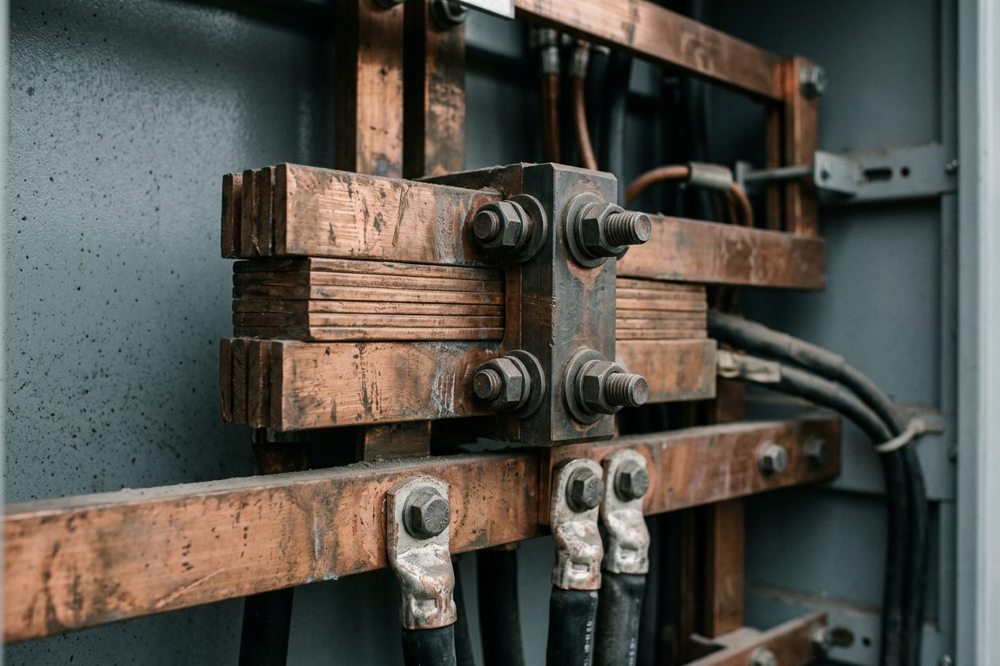

【虚构叙事练习】老周在那条线上走了十九年。问他工作的意义，他想了很久，说了一句：就是把电送过去。
一天走十二公里
我跟着老周上山那天，是十月中旬，风已经硬了。他背的包不大：一卷漆笔、一副望远镜、两瓶水、一个铝饭盒。他的工作是巡线——沿着一整段输电走廊走，看塔基有没有沉降，看绝缘子有没有破损，看有没有人在线下施工。
走得快的时候，一小时四公里。一天下来大概十二公里。他走得很稳，不看手机，偶尔停下来用望远镜往上瞄一眼，然后接着走。
山上的风把塔上的线吹得嗡嗡响。我问他这声音算正常吗，他说算，不正常的时候是「啪」的一声，那就要记录、上报、等检修队。
他真正在找的是变化
巡线不是巡检，是找变化。塔还是那座塔，但螺栓会松、漆会掉、土会沉、草会长到不该长的地方。他的办法很笨：记住上一次的样子，再看这一次有什么不一样。

铜排与螺栓的材质示意；AI生成，不是老周的设备或巡线记录
漆笔是他自己带的。红色的画在这次看到的地方，等下一轮来，先看红色还在不在。这套办法没有系统、没有 App、没有数据看板，在这段虚构叙事里，它帮他记住了一轮巡检之间的变化；这不构成与飞行检查能力的比较。
他说他记不住那么多数，只记得住「跟上次不一样」的地方——人脑不适合存状态，适合存差异。
这个判断后来我在很多地方又见到一次。运维团队做值班记录，写的是「与昨日相比」，而不是「今日状态」；机房巡检表上最有价值的一栏，是「异常项」而不是「正常项」。差异比状态更便宜，也更容易被继承。
待补素材
待补环境图：输电塔与巡线路径；不得冒充虚构人物的真实照片
职责：锚点
设备坏了不可怕，可怕的是你不知道它是怎么坏的。
—— 老周
他不太说自己
我准备了一整页问题，最后大半没用上。问到「有没有印象最深的一次抢修」，他说有，然后讲了三分钟天气、路况和同事。问到「这工作难在哪」，他说不难，就是得走。
他不是不愿意讲，是这套工作里没有留给「我」的位置。一条线路的好坏不由某一个人决定，也不由某一天决定，它由十九年里每一天都不出事决定。这种结果无法被归功，也就很难被讲述。
记录本比人记得久
他有一个硬皮的本子，记的不是诗，是日期、塔号、和一句短语。翻到第三年的时候，我看见一行字：「4号塔基东侧回填下沉，约两指。」后面没有结论，没有签名。
这本子现在还在用。他说等他退了，这本子要交给下一班的人，因为「塔不会告诉我它上一次是什么样」。
关于配图
人物、对话、年限、路程与见闻均为虚构教学素材，不是采访报道。配图只是示意，封面出处／授权未附；待补图只用于测试占位路径，本稿不能直接发布。
真正被需要的系统，都长着一张没什么可说的脸；它的成功，是所有事故都没有发生。
下山的时候天已经暗了，山脊上的塔一盏一盏亮起指示灯。老周走得比我快，他说天黑之前要走到第三个塔基——那里今年春天塌过一小块土，他想再看一眼。
记录变化，比记录正常，更能帮助接班的人。
观察内容与商业的人